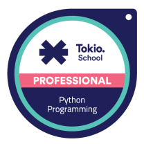
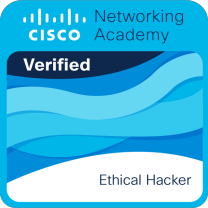
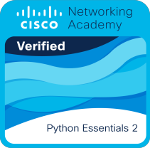

Tiago Custódio
Tiago Filipe Fernandes dos Santos Alves Custódio
Profissional versátil com uma base técnica sólida, combinando vasta experiência em diagnóstico de sistemas, configuração de redes e suporte IT com competências avançadas em Python (Django) e formação certificada pela Cisco em Cibersegurança (Defesa de Redes, Endpoint Security e Ethical Hacking) para construir soluções tecnológicas eficientes, robustas e seguras.



Engenharia de Software, Cibersegurança & Infraestrutura
Uma combinação rara entre desenvolvimento backend em Python (Django), segurança ofensiva/defensiva certificada pela Cisco e domínio físico de redes, servidores e diagnóstico de sistemas.
Certificações Cisco, Python Institute & Tokio School
Clica em qualquer certificado para visualizar o documento PDF original diretamente no navegador (com QR Code de verificação) ou validar todas as insígnias no Credly.
Soluções Práticas em Python, Django & Cyber Defense
Aplicações focadas em código limpo, orientação a objetos, segurança desde a conceção (Security by Design) e automação de diagnóstico.
Percurso Profissional & Académico
Da precisão do diagnóstico mecatrónico (Nota Final 20/20 no CEPRA) e coordenação de equipas até ao desenvolvimento de software em Python (Django) e Cibersegurança.
Inspeciona o Perfil via Terminal
Clica num comando rápido abaixo ou escreve help, whoami, skills, certs ou contact.
Pronto para integrar a tua equipa em Software, Cibersegurança ou IT
Procuras um profissional com forte capacidade analítica, domínio prático de Python/Django e formação certificada em Cibersegurança e Redes? Entra em contacto direto.